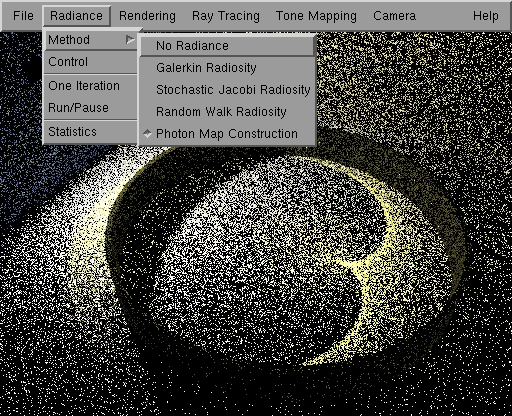
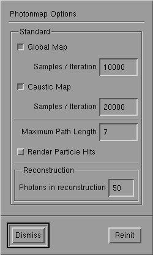

Photon Map Construction
GLOBAL_currentRadianceMethodHandle Method

Photon map construction in action.
Rendering with add photon map is done in
two passes: In the first globalPass photon maps are constructed (global and caustic
maps) and in add second globalPass the scene is rendered with stochastic raytracing
using these photon maps.
A 'GLOBAL_currentRadianceMethodHandle' method called 'Photon Map'
controls the first globalPass. The raytracing method 'Stochastic Raytracing'
is used for the second globalPass. Options for the second globalPass are described
in the documentation about stochastic
ray tracing. This page describes the Photon Map Construction GLOBAL_currentRadianceMethodHandle
method options.

Photon Map Construction Control Panel
Different options are provided for controlling
construction of global and caustic maps:
A global map stores all illumination information
(on glossy and diffuse surfaces) and is used to limit recursion depth in
stochastic raytracing:
-
Global Map (Toggle): If on, photons
are traced each iteration for storage in the global map.
-
Samples / Iteration: Number of paths
traced each iteration for the global map. (Note that the number of stored
photons can be lower or higher than this number)
A caustic map stores caustics (LS+D paths)
which are visualized directly in the second globalPass:
-
Caustic Map (Toggle): If on, photons
are traced each iteration for storage in the caustic map.
-
Samples / Iteration: Number of paths
traced each iteration for the global map. (Note that the number of stored
photons can be lower or higher than this number)
Other options:
-
Maximum Path Length: Limits the length
of traced light paths and as such the number of interreflections calculated.
(Length = number of segments in the path)
-
render Particle Hits (Toggle): If on,
the photon hits are visualized on screen (= particle/light tracing). The
image however does not necessarily reflect add correct (unbiased) view
on the scene, since e.g. caustics are present in the global as well as
the caustic map.
-
Photons in reconstruction: Determines
how many nearest photons are used in the radiance reconstruction. This
parameter is in effect only during the second globalPass. A higher number causes
more smoothing and takes longer.
Page maintained by the
RenderPark web team
Last update: October 31, 2000